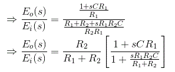

• Methods
Phase Lead Compensation
• Effect
• Advantages
• Disadvantages
Phase Lag Compensation
• Effect
• Advantages
• Disadvantages
Phase Lag-Lead Compensation
• Advantages
Before I introduce you about various compensation in control system in detail, it is very essential to know the uses of compensating networks in the control system. The important uses of the compensating networks are written below.
Necessary of Compensation
- In order to obtain the desired performance of the system, we use compensating networks. Compensating networks are applied to the system in the form of feed forward path gain adjustment.
- Compensate a unstable system to make it stable.
- A compensating network is used to minimize overshoot.
- These compensating networks increase the steady state accuracy of the system. An important point to be noted here is that the increase in the steady state accuracy brings instability to the system.
- Compensating networks also introduces poles and zeros in the system thereby causes changes in the transfer function of the system. Due to this, performance specifications of the system change.
Methods of Compensation
- Connecting compensating circuit between error detector & plants known as series compensation.
- When a compensator used in a feedback manner called feedback compensation.
- A combination of series and feedback compensator is called load compensation.
Series Compensator
Feedback Compensator
Load Compensator
Now what are compensating networks? A compensating network is one which makes some adjustments in order to make up for deficiencies in the system. Compensating devices are may be in the form of electrical, mechanical, hydraulic etc. Most electrical compensator are RC filter. The simplest network used for compensator are known as lead, lag network.
Phase Lead Compensation
A system which has one pole and one dominating zero (the zero which is closer to the origin than all over zeros is known as dominating zero.) is known as lead network. If we want to add a dominating zero for compensation in control system then we have to select lead compensation network.
The basic requirement of the phase lead network is that all poles and zeros of the transfer function of the network must lie on (-)ve real axis interlacing each other with a zero located at the origin of nearest origin.
Given below is the circuit diagram for the phase lead compensation network.
Phase Lead Compensation Network
From above circuit we get,
Equating above expression of I we get,
Now let us determine the transfer function for the given network and the transfer function can be determined by finding the ratio of the output voltage to the input voltage.
So taking Laplace transform of both side of above equations,

On substituting the α = (R1 +R2)/ R2 & T = {(R1R2) /(R1 +R2)} in the above equation.
Where T and α are respectively the time constant and attenuation constant, we have
The above network can be visualized as an amplifier with a gain of 1/α. Let us draw the pole zero plot for the above transfer function.
Pole Zero Plot of Lead Compensating Network
Clearly we have -1/T (which is a zero of the transfer function) is closer to origin than the -1/(αT) (which is the pole of the transfer function).Thus we can say in the lead compensator zero is more dominating than the pole and because of this lead network introduces positive phase angle to the system when connected in series.
Let us substitute s = jω in the above transfer function and also we have α < 1. On finding the phase angle function for the transfer function we have
Now in order to find put the maximum phase lead occurs at a frequency let us differentiate this phase function and equate it to zero. On solving the above equation we get
Where, θm is the maximum phase lead angle. And the corresponding magnitude of the transfer function at maximum θm is 1/a.
Effect of Phase Lead Compensation
- The velocity constant Kv increases.
- The slope of the magnitude plot reduces at the gain crossover frequency so that relative stability improves & error decrease due to error is directly proportional to the slope.
- Phase margin increases.
- Response become faster.
Advantages of Phase Lead Compensation
Let us discuss some of the advantages of the phase lead compensation-
- Due to the presence of phase lead network the speed of the system increases because it shifts gain crossover frequency to a higher value.
- Due to the presence of phase lead compensation maximum overshoot of the system decreases.
Disadvantages of Phase Lead Compensation
Some of the disadvantages of the phase lead compensation -
- Steady state error is not improved.
Phase Lag Compensation
A system which has one zero and one dominating pole ( the pole which is closer to origin that all other poles is known as dominating pole) is known as lag network. If we want to add a dominating pole for compensation in control system then, we have to select a lag compensation network.
The basic requirement of the phase lag network is that all poles & zeros of the transfer function of the network must lie in (-)ve real axis interlacing each other with a pole located or on the nearest to the origin.
Given below is the circuit diagram for the phase lag compensation network.
Phase Lag Compensating Network
We will have the output at the series combination of the resistor R2 and the capacitor C.
From the above circuit diagram, we get
Now let us determine the transfer function for the given network and the transfer function can be determined by finding the ratio of the output voltage to the input voltage.
Taking Laplace transform of above two equation we get,
On substituting the T = R2C and β = {(R2 + R1 ) / R1} in the above equation (where T and β are respectively the time constant and dc gain), we have
The above network provides a high frequency gain of 1 / β. Let us draw the pole zero plot for the above transfer function.

Pole Zero Plot of Lag Network
Clearly we have -1/T (which is a zero of the transfer function) is far to origin than the -1 / (βT)(which is the pole of the transfer function). Thus we can say in the lag compensator pole is more dominating than the zero and because of this lag network introduces negative phase angle to the system when connected in series.
Let us substitute s = jω in the above transfer function and also we have a < 1. On finding the phase angle function for the transfer function we have
Now in order to find put the maximum phase lag occurs at a frequency let us differentiate this phase function and equate it to zero. On solving the above equation we get
Where, θm is the maximum phase lead angle. Remember β is generally chosen to be greater than 10.
Effect of Phase Lag Compensation
- Gain crossover frequency increases.
- Bandwidth decreases.
- Phase margin will be increase.
- Response will be slower before due to decreasing bandwidth, the rise time and the settling time become larger.
Advantages of Phase Lag Compensation
Let us discuss some of the advantages of phase lag compensation -
- Phase lag network allows low frequencies and high frequencies are attenuated.
- Due to the presence of phase lag compensation the steady state accuracy increases.
Disadvantages of Phase Lag Compensation
Some of the disadvantages of the phase lag compensation -
- Due to the presence of phase lag compensation the speed of the system decreases.
Phase Lag-Lead Compensation
With single lag or lead compensation may not satisfied design specifications. For an unstable uncompensated system, lead compensation provides fast response but does not provide enough phase margin whereas lag compensation stabilize the system but does not provide enough bandwidth. So we need multiple compensators in cascade.
Given below is the circuit diagram for the phase lag- lead compensation network.
Lag Lead Compensating Network
Now let us determine transfer function for the given network and the transfer function can be determined by finding the ratio of the output voltage to the input voltage.
On substituting the αT1 = R1C1, R2C2 = βT2, R1R2C1C2 = αβT1T2 and T1T2 = R1R2C1C2 in the above equation (where T1, T2 and α, β are respectively the time constants and attenuation constants). We have
Let us draw the pole zero plot for the above transfer function.
Pole Zero Plot Lag Lead Network
Clearly we have -1/T (which is a zero of the transfer function) is far to the origin than the -1/(βT)(which is the pole of the transfer function). Thus we can say in the lag-lead compensation pole is more dominating than the zero and because of this lag-lead network may introduces positive phase angle to the system when connected in series.
Advantages of Phase Lag-Lead Compensation
Let us discuss some of the advantages of phase lag- lead compensation-
- Due to the presence of phase lag-lead network the speed of the system increases because it shifts gain crossover frequency to a higher value.
- Due to the presence of phase lag-lead network accuracy is improved.
 by
by